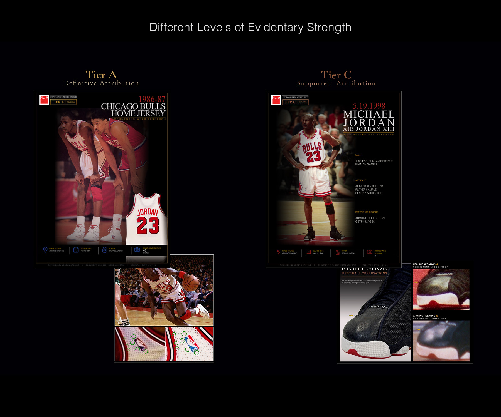
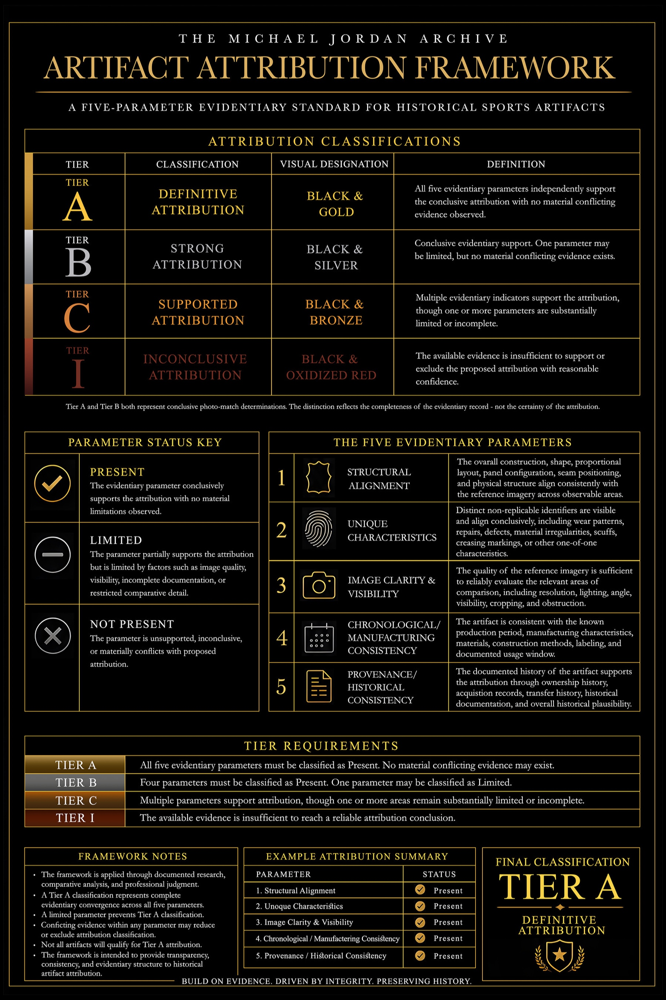
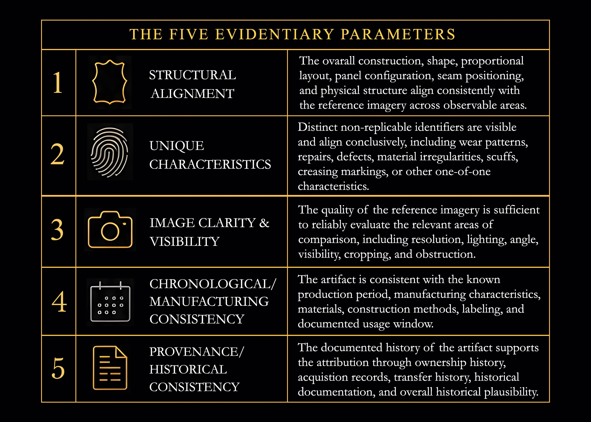
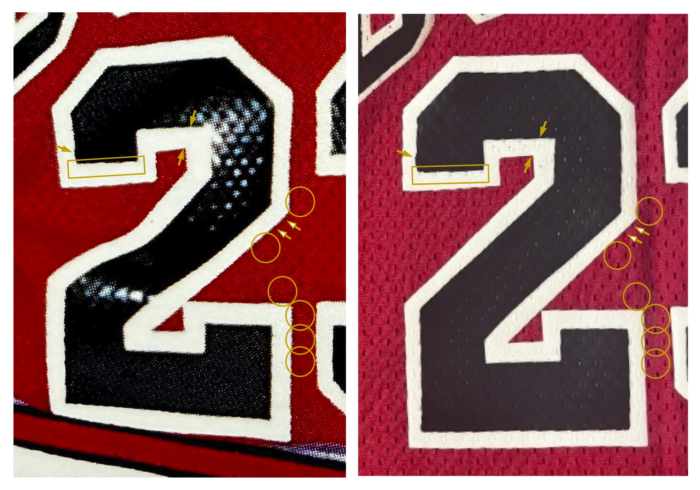
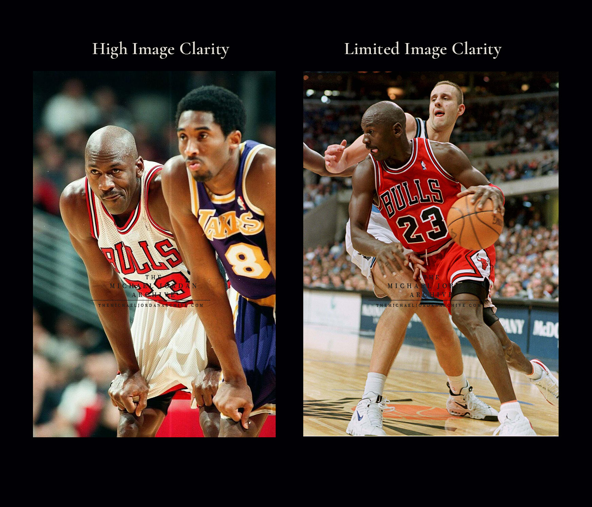
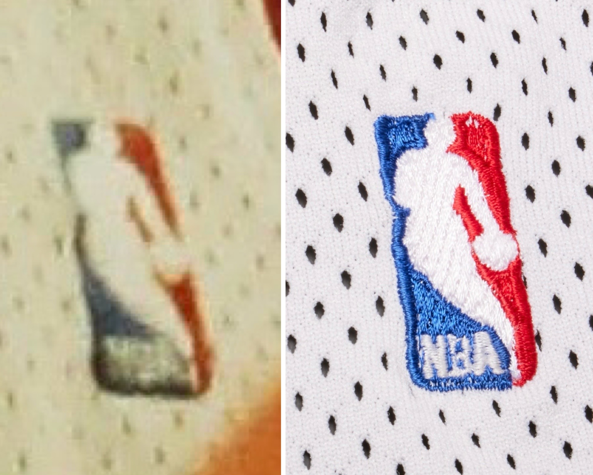
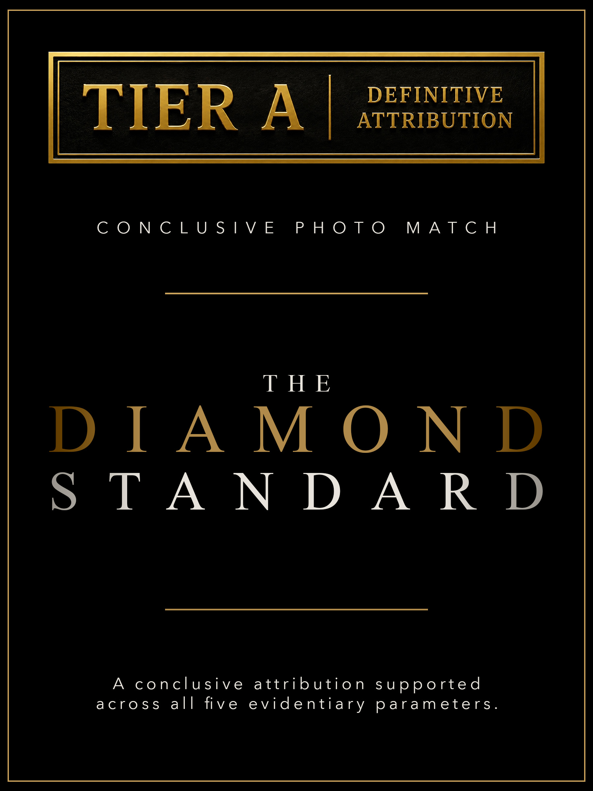
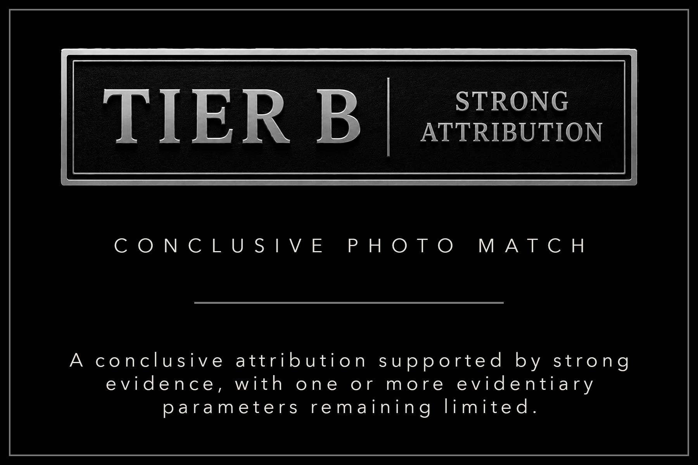
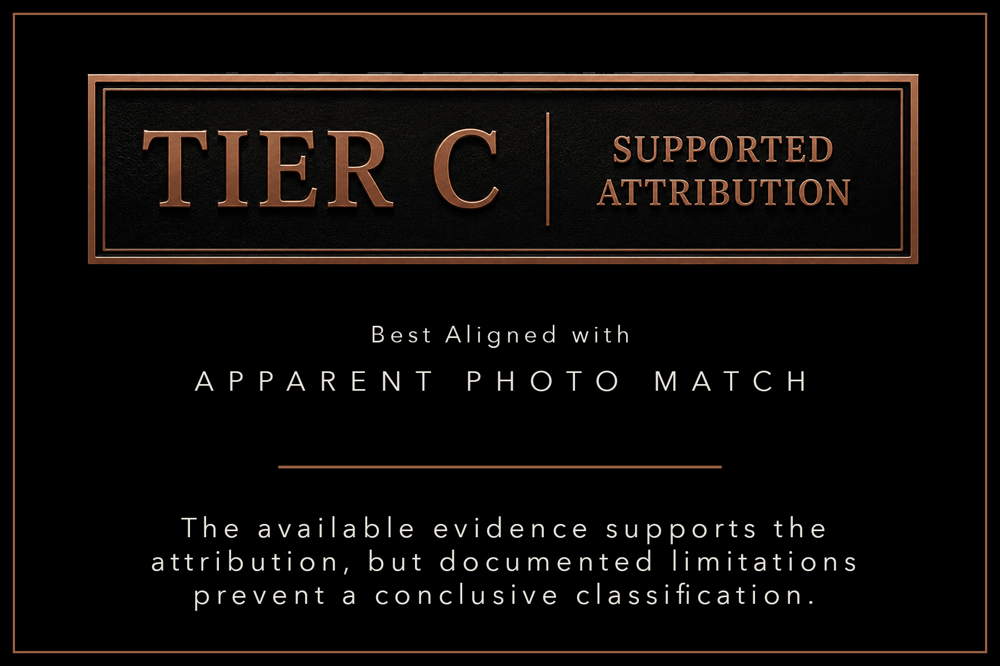
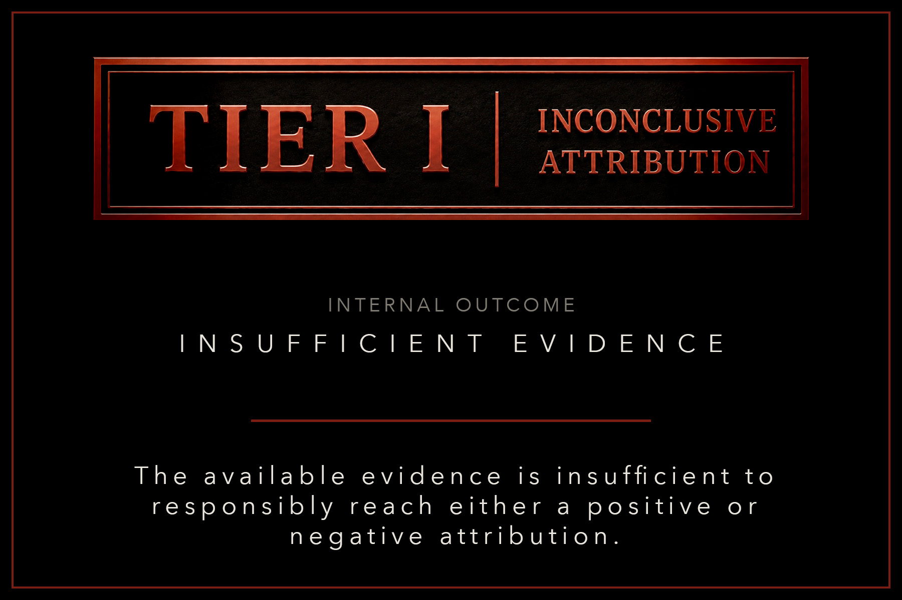

For collectors, photographic attribution can transform an artifact from a historically associated object into something directly connected to a specific game, performance, or moment in time.
A jersey may be connected to a particular night through the precise alignment of mesh holes, loose threads, numeral placement, repairs, stains, or manufacturing irregularities. A pair of sneakers may be identified through creasing, scuffs, exposed adhesive, outsole wear, stitching behavior, or one-of-one material characteristics visible in period photography.
When those details align, the photographic record can provide a powerful bridge between a surviving artifact and its historical use.
The difficulty is that not every attribution is supported by the same quantity or quality of evidence.
One determination may be supported by numerous independent, non-replicable characteristics visible across multiple photographs. Another may rely on fewer observable similarities, limited reference imagery, incomplete provenance, or areas of comparison that remain partially obscured.
Both may still be described using the same two words.
The Question Behind the Conclusion
The central issue is not whether photographic attribution has value. Direct visual correspondence remains one of the strongest methods available for connecting a surviving artifact to its historical use.
The issue is how the strength of that correspondence is evaluated and communicated.
A conclusion supported by several independent categories of evidence should not be presented in precisely the same way as one limited by image quality, incomplete visibility, uncertain chronology, or an undocumented ownership history.
Without a defined classification structure, the collector is often left to interpret the meaning of a determination without knowing how much evidence was available, which areas were evaluated, what limitations remained, or whether any information conflicted with the proposed attribution.
The conclusion is visible.
The evidentiary strength behind it often is not.

A Framework for Evidentiary Strength
The Michael Jordan Archive Artifact Attribution Framework was developed to address this gap.
The framework establishes a structured method for evaluating visual evidence, recording documented limitations, and communicating the strength of a proposed attribution.
Rather than treating photographic attribution as a simple yes-or-no conclusion, it considers the complete evidentiary record before assigning one of four classifications.
Its guiding principle is straightforward:
Evidence Before Certainty.
Not every artifact qualifies for definitive attribution. In some cases, the available imagery and historical record support a conclusive finding. In others, the proposed attribution is supported while meaningful limitations remain.
At times, the record is insufficient to responsibly reach either a positive or negative conclusion.
The framework is designed to make those distinctions visible.

How the Framework Works
Each proposed attribution is evaluated through documented research, comparative analysis, and professional judgment.
The framework does not force certainty where the photographic or historical record is limited. Instead, it identifies the strength of the available evidence and assigns the appropriate classification.
Every evaluation begins with five evidentiary parameters:
Structural Alignment.
Unique Characteristics.
Image Clarity and Visibility.
Chronological and Manufacturing Consistency.
Provenance and Historical Consistency.
These parameters are not treated as isolated boxes to be checked. They operate cumulatively, allowing the physical artifact, the photographic record, its manufacturing history, and its documented provenance to be considered together.
The Five Evidentiary Parameters
1. Structural Alignment

Structural alignment examines the overall construction, shape, proportional layout, panel configuration, seam positioning, and physical structure of the artifact.
In a jersey, this may involve the relationship between the body panels, lettering, numerals, trim, mesh, seams, and manufacturing details.
In footwear, the analysis may include the overall silhouette, toe shape, upper height, panel proportions, outsole geometry, stitching paths, or the placement of individual components.
Structural correspondence alone does not establish a one-of-one identification. It does, however, determine whether the artifact is physically consistent with the item visible in the historical record.
2. Unique Characteristics
Unique characteristics form the most individually identifying category within the framework.
These are non-replicable features that distinguish one artifact from another: loose threads, repairs, defects, material irregularities, scuffs, creases, markings, adhesive patterns, stains, wear behavior, or other one-of-one characteristics.
A general similarity may establish that two items are the same model or construction type. A unique characteristic may establish that they are the same individual artifact.
The strongest attributions are typically supported by multiple independent characteristics appearing consistently across the available imagery.

3. Image Clarity & Visibility

Even a potentially significant characteristic has limited evidentiary value if the reference imagery does not allow it to be evaluated reliably.
This parameter considers resolution, lighting, angle, visibility, cropping, motion blur, obstruction, and the amount of the artifact visible within the historical image.
A reference photograph may strongly support one area of comparison while leaving another partially obscured or unavailable for analysis.
Rather than assuming unseen characteristics are either matching or conflicting, the framework documents these limitations and incorporates them into the overall evidentiary assessment.
4. Chronological / Manufacturing Consistency
An artifact must be consistent with the production period and documented usage window associated with the proposed attribution.
The analysis may include tagging, production codes, materials, construction methods, factory characteristics, labeling, design revisions, team inventory practices, or known changes made during a season.
An object can visually resemble the reference artifact while still contain a manufacturing feature that places it outside the relevant period.
Conversely, older production garments sometimes remained in team inventory and were worn during later seasons. The chronology must therefore be evaluated through evidence rather than assumptions based solely on a tag year or production code.

5. Provenance / Historical Consistency

Provenance does not replace photographic evidence, but it can strengthen—or materially weaken—the historical plausibility of a proposed attribution.
This parameter considers ownership history, acquisition records, transfer history, letters, team documentation, auction records, public appearances, and other evidence connecting the artifact to its claimed origin.
A coherent and documented history may support the attribution established through visual analysis.
An inconsistent timeline, unsupported ownership claim, or conflict within the historical record may limit or exclude a classification even where certain visual similarities are present.
Recording What the Evidence Can Support
Each evidentiary parameter is assigned one of three statuses: Present, Limited, or Not Present.
A parameter is marked Present when it conclusively supports the attribution with no material limitations observed.
A parameter is marked Limited when it partially supports the attribution but cannot be evaluated completely because of image quality, visibility, incomplete documentation, or restricted comparative detail.
A parameter is marked Not Present when it is unsupported, inconclusive, or materially conflicts with the proposed attribution.
This distinction is important. A limited parameter is not automatically negative. It records that the available evidence does not permit the same level of confidence assigned to a fully present parameter.
By retaining these limitations within the final assessment, the framework makes clear not only what is known, but also what could not be established.

The Attribution Classifications
Once the five parameters have been evaluated, the combined evidentiary record leads to one of four attribution classifications.
These classifications are not intended to replace the underlying research. They provide a consistent way to communicate the strength of the conclusion produced by that research.
Tier A — Definitive Attribution

Tier A is reserved for determinations in which all five evidentiary parameters independently support the attribution and no material conflicting evidence is observed.
It represents a five-parameter evidentiary conclusive photo match and the highest confidence classification available within the framework.
At this level, the physical construction, one-of-one characteristics, photographic record, chronology, and historical documentation form a mutually supporting evidentiary record.
Tier A is identified as The Diamond Standard. The Diamond Standard is not a separate fifth classification. It is the designation applied to Tier A.

Tier B — Strong Attribution
Tier B represents Strong Attribution.
The overall evidentiary record strongly supports the proposed attribution, although one parameter may remain limited.
No material conflicting evidence may exist.
Tier B aligns with a conclusive photo-match determination. The distinction from Tier A is not that the positive conclusion has disappeared, but that one evidentiary category cannot be established to the same complete standard.
That limitation may arise from incomplete provenance, restricted visibility, a missing reference angle, or another documented evidentiary constraint.


Tier C — Supported Attribution

Tier C represents Supported Attribution.
Multiple evidentiary indicators support the proposed attribution, although one or more parameters remain substantially limited or incomplete.
In terminology already familiar to auction houses and collectors, Tier C best aligns with what has commonly been described as an “apparent photo match.”
The framework uses Supported Attribution as its primary classification because it communicates the conclusion more directly: the available evidence supports the attribution, but does not reach the conclusive standard required for Tier A or Tier B.
Tier C is therefore a positive evidentiary finding accompanied by meaningful and clearly documented limitations.

Tier I — Inconclusive Attribution
Tier I represents Inconclusive Attribution.
The available evidence is insufficient to support or exclude the proposed attribution with reasonable confidence.
An inconclusive determination does not mean that the artifact is definitively not a match.
It means the existing photographic, physical, chronological, or historical record does not permit a responsible positive conclusion.
Additional imagery, documentation, or comparative access may change the classification in the future. Until that evidence is available, the framework records the uncertainty rather than forcing a conclusion.


The classification is the result.
The evidence is the foundation.
Every determination remains dependent upon the quality, completeness, and consistency of the underlying record.
Professional Judgment and Conservative Conclusions
No framework can remove professional judgment from photographic attribution.
Historical images vary widely in quality. Artifacts change through use, age, repair, handling, restoration, and storage. Provenance records may be incomplete. Manufacturing practices are not always uniform, and new evidence may emerge years after an initial determination.
The purpose of the framework is not to replace judgment with a mechanical score.
Its purpose is to ensure that judgment is exercised within a consistent evidentiary structure.
The five parameters require the researcher to examine the artifact from multiple directions, document what is observable, acknowledge what is limited, and identify any material conflict before assigning a final classification.
This structure also protects against overstatement.
Where the evidence is conclusive, the classification should say so. Where the evidence supports the attribution but remains incomplete, the limitation should remain visible. Where the record cannot support a responsible conclusion, uncertainty should be preserved.
Evidence before certainty is therefore not only a guiding phrase. It is the operating principle of the framework.
A Common Language for the Hobby
Collectors have long asked for a grading system capable of distinguishing between different levels of photographic evidence.
The Artifact Attribution Framework answers that need without reducing a complex research determination to a numerical score.
Tier A, Tier B, Tier C, and Tier I provide a common language for communicating evidentiary strength while retaining the detailed research behind the conclusion.
For collectors, the classification provides a clearer understanding of what a determination represents.
For auction houses, it offers language that can distinguish a conclusive finding from a supported or inconclusive one.
For researchers, insurers, museums, and institutions, it preserves the documented basis and limitations of the attribution rather than presenting a conclusion without context.
Most importantly, the framework allows the evidence to determine the classification—not the expectation attached to the artifact.
Conclusion
Photographic attribution has become one of the most consequential forms of research within the game-worn memorabilia hobby.
It can establish a direct relationship between a surviving artifact and a historic game, season, performance, or moment. It can reveal usage histories that were previously unknown, correct earlier assumptions, and preserve information that may otherwise disappear from the historical record.
That significance makes the way these conclusions are communicated equally important.
“Photo matched” should not function as a universal phrase detached from the strength of the supporting evidence.
A five-parameter conclusive determination is materially different from a supported attribution with incomplete reference imagery. An inconclusive finding is materially different from a negative one. Each deserves language that accurately reflects what the available record can support.
The Michael Jordan Archive Artifact Attribution Framework was developed to make those distinctions transparent.
It does not promise certainty where certainty does not exist.
It provides a structure for documenting the evidence, preserving the limitations, and assigning the conclusion that the record can responsibly support.
For the collector, the result is a clearer answer to the question behind every photographic attribution:
How strong is the evidence?